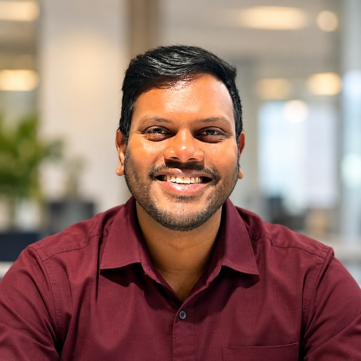

IT Operations at Infosys BPM, building toward security operations.
I studied cybersecurity at QUT, where my work centred on the defensive and risk side of security: threat modelling, quantitative risk assessment, access control and audit logging, and applied cryptography. I now support enterprise IT operations at Infosys BPM, monitoring infrastructure and handling secure file transfers for government and financial-services clients. Every project below links to its submitted report, redacted for privacy, so you can see the work itself.
Evidence files are my submitted QUT reports. Student numbers, email addresses, signatures and client contact details have been blacked out. Each SHA-256 fingerprint identifies the exact file published here.